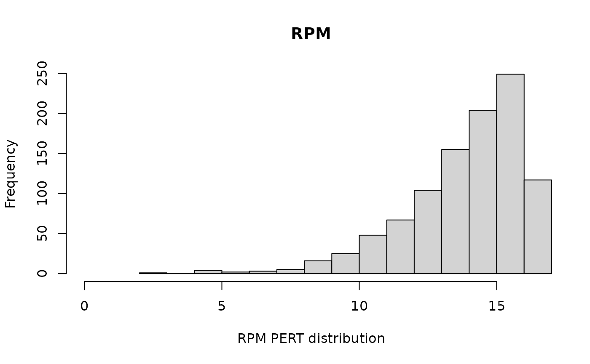
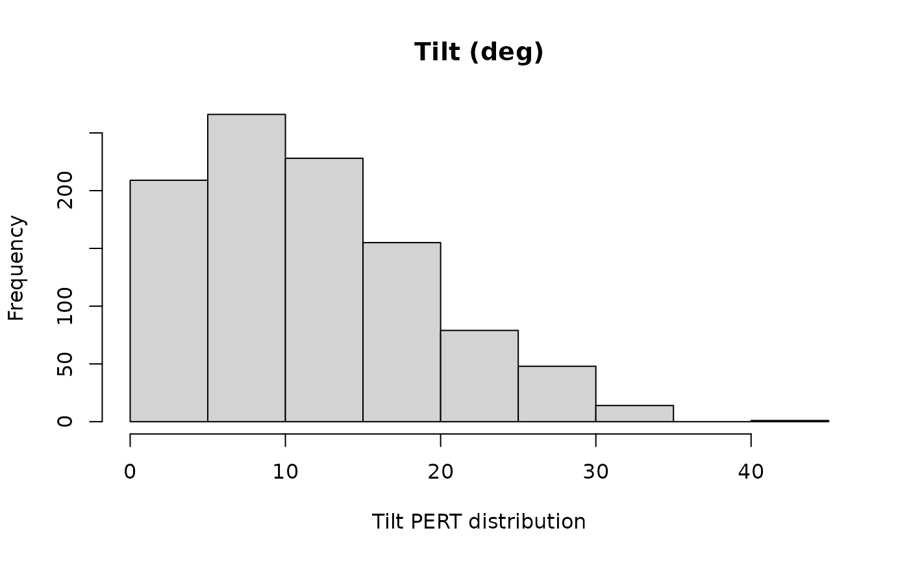
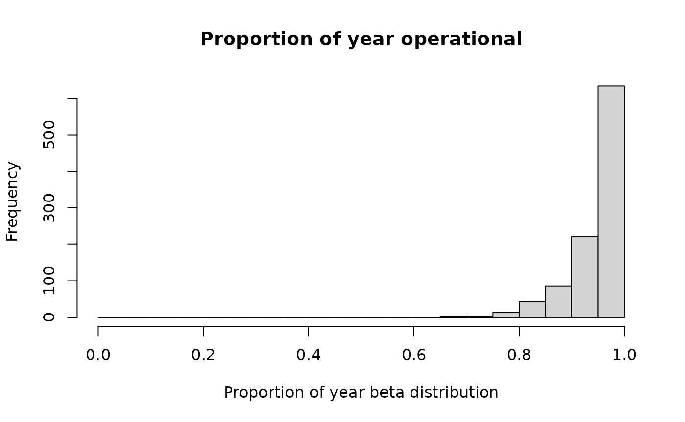
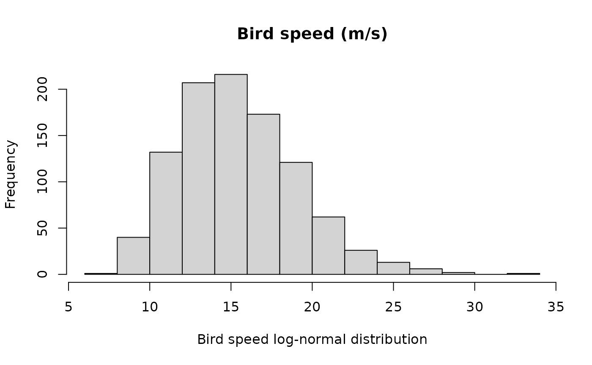
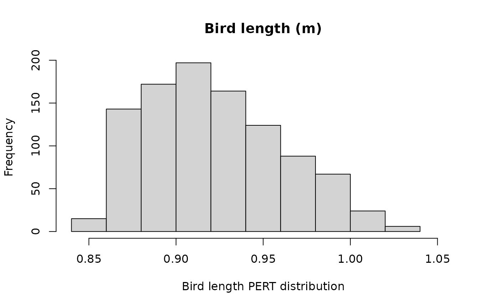
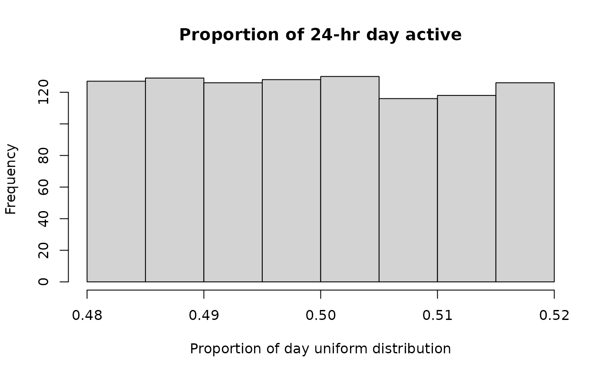
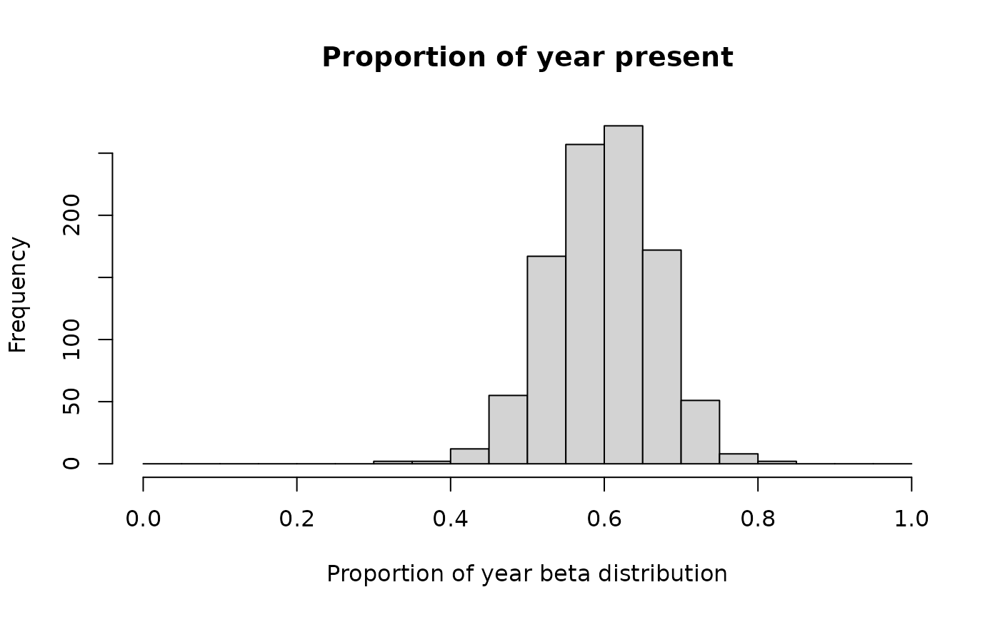
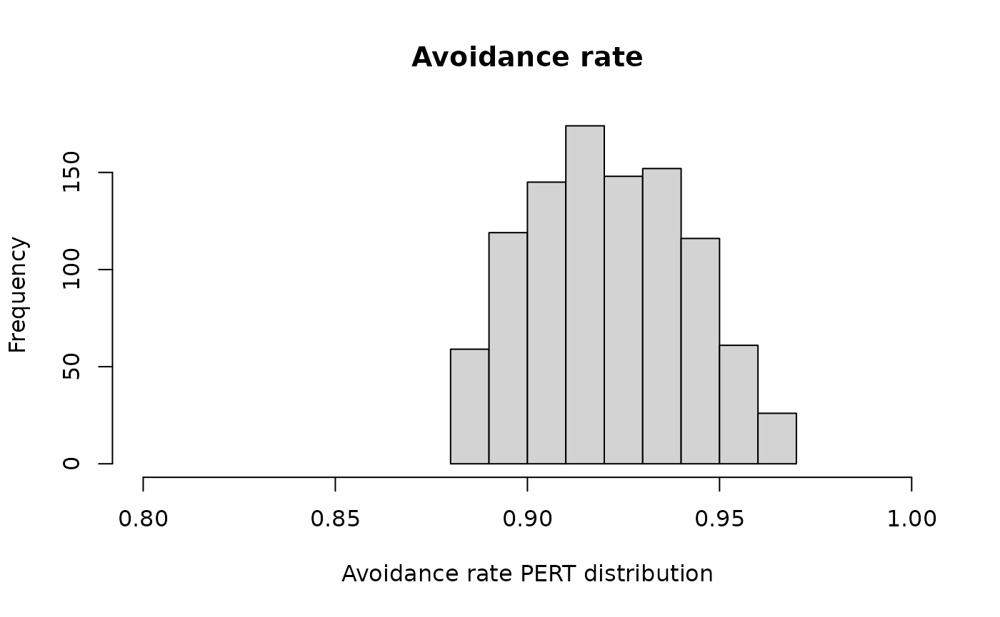
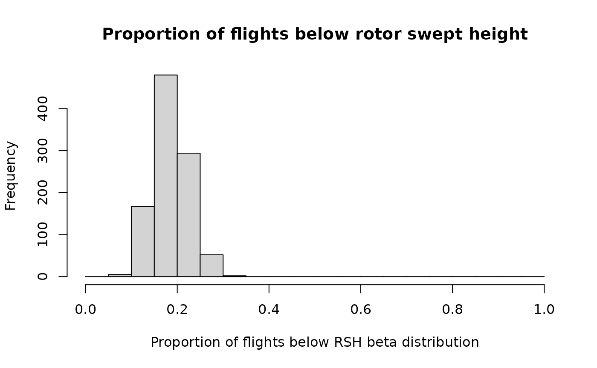
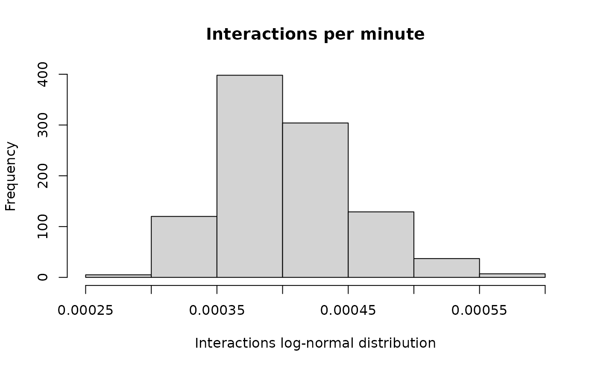

Choosing and fitting distributions for a stochastic CRM
Source:vignettes/choosing-and-fitting-distributions.Rmd
choosing-and-fitting-distributions.Rmd
library(collision)
library(Distance) # for distance modelling
#> Loading required package: mrds
#> This is mrds 3.0.1
#> Built: R 4.6.0; ; 2026-04-24 22:38:47 UTC; unix
#>
#> Attaching package: 'Distance'
#> The following object is masked from 'package:mrds':
#>
#> create.bins
library(mc2d) # for the PERT distribution
#> Loading required package: mvtnorm
#>
#> Attaching package: 'mc2d'
#> The following objects are masked from 'package:base':
#>
#> pmax, pmin
library(ggplot2)
library(data.table) # for easy summarising and joins
#>
#> Attaching package: 'data.table'
#> The following object is masked from 'package:base':
#>
#> %notin%
library(MASS) # for multivariate normal
set.seed(1234)Distributions example
This is a companion vignette to the simple simulation example.
The inner functions of the package are designed to take single value
inputs. The input functions define_bird and
define_turbine can define single or stochastic inputs. So
we need to:
- Define stochastic rules for inputs
- bird(s):
define_bird() - turbine(s):
define_turbine() - proportion of flights at and below rotor swept height
- flights through the turbine cylinder (i.e. interactions)
- bird(s):
- Sample from the input distributions into the collision calculations to determine the distribution of possible collision outcomes.
This allows the simulation to more accurately reflect the uncertainty due to both natural variance (e.g. bird body length) and measurement uncertainty (e.g. estimated flight heights).
But how do we choose a distribution and fit the parameters for each of these inputs?
Distributions discussed in this vignette:
- Uniform distribution: every value has an equal likelihood of occurring. This is handy when you have only a range of values and have no reason to believe any one value in more likely than any other.
- Normal distribution (aka Gaussian): typically not appropriate for most values in a CRM because it is not bounded at 0 (i.e. can be negative), which is rarely the case for the measurements used in collision risk modelling.
- Log-normal distribution: very useful for modelling a lot of physical parameters (e.g. length) because it is bounded at 0 (i.e. can’t be negative).
- Beta distribution: useful for modelling proportions because it is bounded between 0 and 1.
-
Modified
PERT distribution: very useful for modelling from expert
elicitation, it takes as parameters a minimum, maximum and mode (or
mean). The modified PERT distribution (which is what is used in
mc2d::rpert) takes a fourth parameter: shape, which determines the peakiness of the distribution. This distribution is perfect for use if you’re given a range and mean rather than a standard deviation and a mean.
There are sort of two kinds of stochastic inputs in this process; there are inputs that should be defined by expert elicitation and those that should be determined from on-site survey results.
Define inputs
The main inputs that are typically determined by expert elicitation are the bird parameters (from an appropriately qualified ecologist) and the turbine parameters (from the project engineers).
Turbine model
collision requires several turbine model parameters as
inputs but majority of these should not vary for a given turbine model
(e.g. hub height). However there are a few parameters that can vary for
a turbine.
RPM, tilt and prop. operational are the ones that can vary.
RPM
Typically the RPM for a given turbine model at a site will have been
thoroughly modelled by the project engineers, as it is closely tied to
energy production. If possible, this distribution should be obtained and
used for the RPM. If the distribution is provided as a spreadsheet of
values or something similar, and you can’t easily fit a pre-defined
distribution, you can just use the sample() function from
base R to sample directly from the empirical distribution in the
simulation.
If you can’t obtain the distribution or the project is in too early stages for the RPM to have been modelled, a PERT distribution may be the way to go. Something like: the minimum = 0, the maximum = maximum operating speed and the mode = the optimal operation speed.
RPM <- set_random("rpert", min = 0, max = 16.5, mode = 16.1, shape = 5)
hist(sample_input(RPM, n = 1000),
main = "RPM", xlim = c(0, 16.5), xlab = "RPM PERT distribution")
Tilt
Although the tilt of the turbine, as an angle, can technically go negative (and therefore could be modelled by a normal distribution), there tends to be a pretty clearly defined range of angles that are physically possible. Therefore a PERT distribution might be more appropriate.
tilt <- set_random("rpert", min = 0, max = 45, mode = 6)
hist(sample_input(tilt, n = 1000),
main = "Tilt (deg)", xlim = c(0, 45), xlab = "Tilt PERT distribution")
Proportion of year operational
The proportion of the year that the turbines are operational is
typically going to be pretty close to 1, but there may still be some
variation in the upper range that you would like to capture. As a
proportion, this can be easily modelled by a beta distribution. To
calculate the beta parameters from a mean and variance (or standard
deviation) requires a little bit of algebra using the mean and variance
definitions from the stats::rbeta() help page, as shown in
shapes_fun below.
# some algebra to get the beta parameters from a mean and variance
shapes_fun <- function(mean, var){
a <- mean * (mean * (1 - mean)/var - 1)
b <- (1 - mean) * (mean * (1 - mean)/var - 1)
return(c(a, b))
}
po_shapes <- shapes_fun(mean = 0.95, var = 0.05^2)
prop_operational <- set_random("rbeta", shape1 = po_shapes[1], shape2 = po_shapes[2])
hist(sample_input(prop_operational, n = 1000),
main = "Proportion of year operational", xlim = c(0, 1),
xlab = "Proportion of year beta distribution", breaks = seq(0, 1, 0.05))
Bird species
The exact physical characteristics of the bird species of concern typically have a lot of variation between individuals, or even for a single individual in the case of flight speed.
Speed and body length
The bird’s physical parameters are the perfect use case for a PERT distribution, things like body length and speed are often given simply as ranges, with little information on the variance.
However, if you prefer not to put hard limits on the distribution, the log-normal distribution is ideal because it can take any positive value. But it will require an estimate of the variance. Note: if you have a list of values that you want to get the log-normal parameters for you can take the mean and standard deviation of the log of the data (as shown in Step 4 of the Interactions section).
# log mean and variance function
# calculate required meanlog and sdlog to get a log-normal distribution with
# the desired mean and sd
lognorm_fun <- function(mean, sd){
meanlog <- log(mean^2/sqrt(mean^2+sd^2))
sdlog <- log(1 + sd^2/mean^2)
return(c(meanlog, sdlog))
}
b_params <- lognorm_fun(mean = 17.1, sd = 8.89)
b_speed <- set_random("rlnorm", meanlog = b_params[1], sdlog = b_params[2])
hist(sample_input(b_speed, n = 1000),
main = "Bird speed (m/s)", xlab = "Bird speed log-normal distribution")
b_length <- set_random("rpert", min = 0.85, max = 1.05, mean = 0.92, shape = 3)
hist(sample_input(b_length, n = 1000),
main = "Bird length (m)", xlim = c(0.84, 1.06), xlab = "Bird length PERT distribution")
Proportions (of day, year and avoidance)
Once again, proportions are often best represented by the beta distribution since it’s bounded between 0 and 1. A PERT distribution or uniform distribution may also be appropriate if you want to use even tighter bounds, for example, you may want to define the avoidance rate between 80% and 99.99% (0.8-0.9999).
# we know it's somewhere between 0.48 and 0.52 but have no reason to believe any
# proportion in that range is more or less likely
prop_day <- set_random("runif", min = 0.48, max = 0.52)
hist(sample_input(prop_day, n = 1000),
main = "Proportion of 24-hr day active", xlab = "Proportion of day uniform distribution")
# get beta shape parameters
py_shapes <- shapes_fun(mean = 0.6, var = 0.068^2) # migratory species
prop_year <- set_random("rbeta", shape1 = py_shapes[1], shape2 = py_shapes[2])
hist(sample_input(prop_year, n = 1000),
main = "Proportion of year present", xlim = c(0, 1),
xlab = "Proportion of year beta distribution", breaks = seq(0, 1, 0.05))
avoidance_rate <- set_random("rpert", min = 0.88, max = 0.97, mean = 0.92, shape = 2)
hist(sample_input(avoidance_rate, n = 1000),
main = "Avoidance rate", xlim = c(0.8, 1), xlab = "Avoidance rate PERT distribution")
Survey data
Now we need to determine the input values from the observations. To understand the uncertainty on complex statistics such as the number of interactions, we suggest using the bootstrap. The bootstrap re-samples from the existing dataset, recalculating the statistic of interest many times. The variance of the re-sampled statistic is used as the estimate of the uncertainty.
The bootstrap is a way of answering the question “If I went out an did this survey again and again, what value would I get”? In order to truly understand this, we need to run the bootstrap at the level of the survey, rather than the level of the observation. In this way, entire clusters of observations would be dropped or retained, depending on whether (in a particular run of the bootstrap re-sample) the corresponding survey is retained.
This is just an example of how you can obtain the distribution, it is up to the analyst to determine how best to model these parameters.
The package observations dataset:
summary(df_obs)
#> distance size type height
#> Min. : 136.0 Min. :1.000 Length :120 Min. : 2.00
#> 1st Qu.: 519.5 1st Qu.:1.000 N.unique : 1 1st Qu.: 33.50
#> Median : 818.5 Median :1.000 N.blank : 0 Median : 77.00
#> Mean : 852.6 Mean :1.283 Min.nchar: 6 Mean : 97.63
#> 3rd Qu.:1134.2 3rd Qu.:2.000 Max.nchar: 6 3rd Qu.:122.00
#> Max. :2334.0 Max. :2.000 Max. :518.00
#> survey_id object
#> Min. : 2.00 Min. : 1.00
#> 1st Qu.: 27.25 1st Qu.: 30.75
#> Median : 54.50 Median : 60.50
#> Mean : 53.56 Mean : 60.50
#> 3rd Qu.: 77.25 3rd Qu.: 90.25
#> Max. :100.00 Max. :120.00
# converting to data.table for ease of joining and summarising
dt_obs <- setDT(copy(df_obs))is a dataset of 120 observations from 100 point count surveys,
including the count (size) of raptors and associated
distance at first observation (distance).
And the package survey dataset:
summary(df_survey)
#> survey_id survey_duration survey_type
#> Min. : 1.00 Min. :45 Length :100
#> 1st Qu.: 25.75 1st Qu.:45 N.unique : 1
#> Median : 50.50 Median :45 N.blank : 0
#> Mean : 50.50 Mean :45 Min.nchar: 5
#> 3rd Qu.: 75.25 3rd Qu.:45 Max.nchar: 5
#> Max. :100.00 Max. :45
dt_survey <- setDT(copy(df_survey))is a dataset of the metadata for the 100 point count surveys, including the duration of each survey.
Bootstrapping is done in the following steps:
- Step 1: Make a function to bootstrap whose input is the data you’re sampling and whose output is the variable of interest (e.g. proportion below rotor swept height)
- Step 2: Bootstrap that function with your survey data as inputs
- Step 3 (not shown): Check that the number of iterations of the bootstrap was sufficient to converge on the variance
- Step 4: Calculate the appropriate parameters for the distribution from the mean and variance of the bootstrap results
Proportion of flights at rotor swept height
The proportion of flights at and below rotor swept height account for
the amount of flights at risk of being struck by the blades of the
turbine. Truncating the the maximum turbine height (as discussed in the
deterministic and simulation examples) means we
only need to calculate a distribution for prop_below_height
since prop_at_height = 1 - prop_below_height. Since the
proportion should be bounded at 0 and 1, a beta distribution is a good
option.
min_rsh <- v90_single$hh - v90_single$rotor_diam * 0.5
max_rsh <- v90_single$hh + v90_single$rotor_diam * 0.5
## Step 1
# Note - this is a simple example; it's up to the analyst how best to fit the height distribution
# If there is limited data or if the heights are significantly binned it is best to fit
# a distribution rather than using the empirical cdf
prop_below <- function(dt_survey = df_survey,
i = seq_len(nrow(dt_survey)),
dt_obs = dt_obs, # filter by max_rsh
h = min_rsh){
dt_boot_i <- dt_survey[, .(survey_id = unique(survey_id))][i]
dt_obs_i <- dt_obs[dt_boot_i, on = .(survey_id), nomatch = 0]
if(nrow(dt_obs_i)==0){
h_boot <- 0
} else {
cdf_dat <- ecdf(dt_obs_i$height)
h_boot <- cdf_dat(h)
}
return(h_boot)
}
## Step 2
# bootstrap prop below min RSH
hmin_boot <- boot::boot(
data = dt_survey,
statistic = prop_below, stype = "i",
R = 900,
h = min_rsh,
dt_obs = dt_obs[height <= max_rsh]
)
## Step 4
h_shapes <- shapes_fun(mean = hmin_boot$t0, var = var(hmin_boot$t))
prop_below_height <- set_random("rbeta", shape1 = h_shapes[1], shape2 = h_shapes[2])
# admire your beautiful creation (aka visual check of distribution)
hist(sample_input(prop_below_height, n = 1000),
main = "Proportion of flights below rotor swept height", xlim = c(0, 1),
xlab = "Proportion of flights below RSH beta distribution", breaks = seq(0, 1, 0.05))
Interactions
# four turbines with locations for use in the cluster correction
df_turbines <- data.frame(
turbine_id = c("T01", "T02", "T03", "T04"),
model = "Vesta V90",
lat = c(-32.505, -32.521, -32.523, -32.516),
lon = c(143.441, 143.442, 143.425, 143.457)
)Now we calculate the variance in the number of flights through the
“turbine cylinder” (a cylinder defined by the rotor diameter and the
maximum rotor swept height of the turbine) per unit time. For
collision this is the number of interactions (for the
turbine as a whole, not just the RSA). This is done in several steps
which you can see in more detail in the deterministic example (Steps 1
and 2 of running the model).
The function takes as input a df_obs_summary data.frame.
This object has one row per survey and must contain a column named
survey_duration and a column named size which
is the total number of individuals observed in each
survey (not observation).
First let’s make that table (using data.table):
dt_obs_survey <- dt_obs[height <= max_rsh, # don't forget to filter by height! (see other vignettes for details)
.("size" = sum(size)), survey_id][dt_survey,
on = "survey_id"]
# need sum(size) because we want one row per survey (not observation)
setnafill(dt_obs_survey, cols = c("size"), fill = 0) # set size to 0 for surveys with no observations to avoid warning about NA observationsNow it can be used in the bootstrap. Since we can’t have negative flights, a log-normal distribution is a good choice as it is bounded at 0.
## Step 1
# make a function that takes survey data and outputs the interactions per minute
n_interactions <- function(df_obs_summary = df_obs_summary,
i = seq_len(nrow(df_obs_summary)),
dt_obs = dt_obs,
rotor_diameter = turbine$rotor_diam,
hub_height = turbine$hh,
df_turbines = df_turbines){
dt_boot_i <- df_obs_summary[i][order(survey_id)]
dt_obs_i <- dt_obs[dt_boot_i[, .(survey_id)]
, on = .(survey_id)
, nomatch = 0]
## It is very important that you find the variance of the EDR if you are doing a stochastic CRM
## EDR is one of the largest sources of variance in the CRM and if it is not included
## the simulation will drastically under-estimate the variance of the estimate
ds_boot <- tryCatch(
# make sure these arguments match the ones used to fit your original distance model
ds(data = dt_obs_i[, -c("object")],
key = "hn",
dht_group = TRUE)
, error = function(e) {
print(e)
NULL
}
)
if (is.null(ds_boot)) return(NA)
edr_boot <- edr_from_distmodel(ds_boot)
er_boot <- encounter_rate(df_obs_summary = dt_boot_i,
wilson_correction = TRUE # default
)
# flights / m / min
obs_flux_boot <- obs_flux(
encounter_rate = er_boot, # numeric per min
eff_detection_width = 2.0*edr_from_distmodel(ds_boot),
eff_detection_height = max_rsh
)
# prop. flux to attribute to each turbine
# only needed if the distance between turbines is < 2*EDR
effective_flux <- cluster_correction_a(
eff_detection_width = 2*edr_boot,
df_turbines = df_turbines
)
#flights through turbine / min
turbine_flights_boot <- turbine_flights(
obs_flux = obs_flux_boot,
spatial_correction = effective_flux,
rotor_diameter = rotor_diameter,
hub_height = hub_height
)
return(turbine_flights_boot)
}
## Step 2
interactions_boot <- boot::boot(data = dt_obs_survey,
statistic = n_interactions, stype = "i",
R = 300,
dt_obs = dt_obs,
rotor_diameter = v90_single$rotor_diam,
hub_height = v90_single$hh,
df_turbines = df_turbines
)
## Step 4
n_interactions_min <- set_random("rlnorm", meanlog = mean(log(interactions_boot$t)),
sdlog = sd(log(interactions_boot$t)))
# visual check
hist(sample_input(n_interactions_min, n = 1000),
main = "Interactions per minute",
xlab = "Interactions log-normal distribution")
Now all of these distributions can be input into a simulation loop to obtain a distribution of likely long-term average collisions per year, as shown in the simple simulation example vignette.